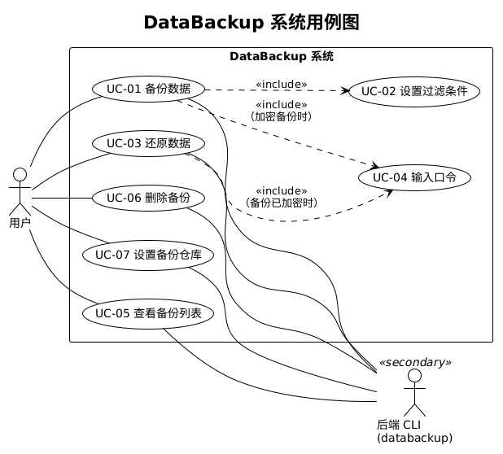
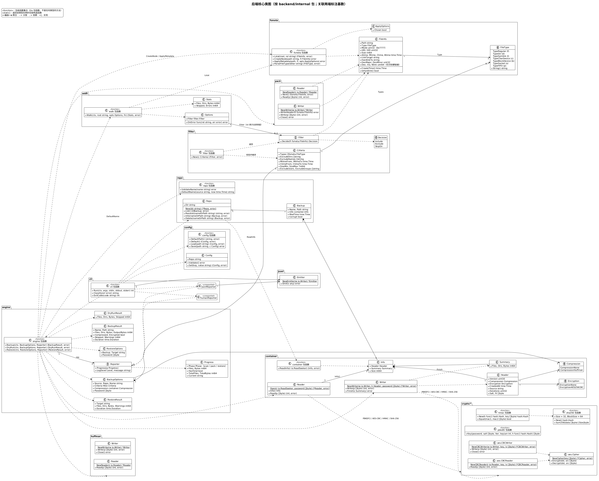
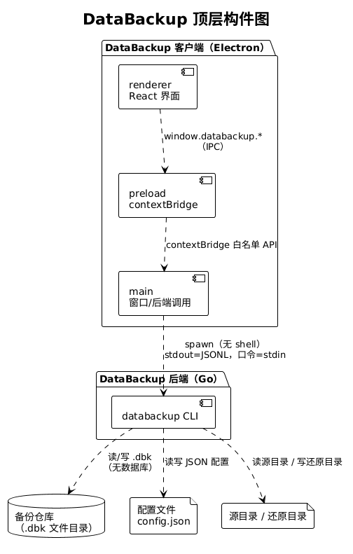
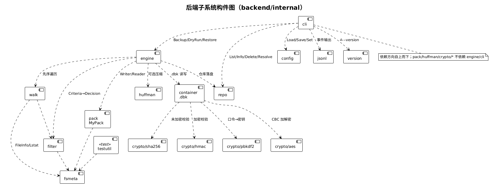
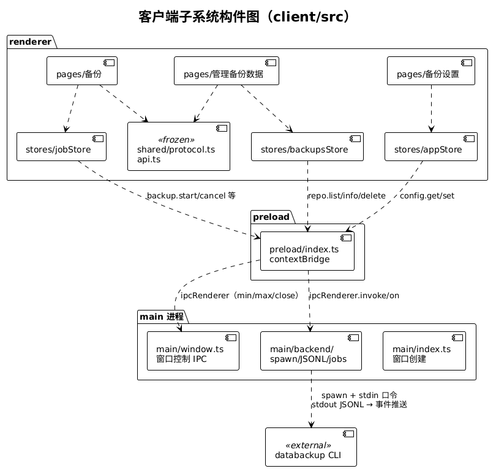
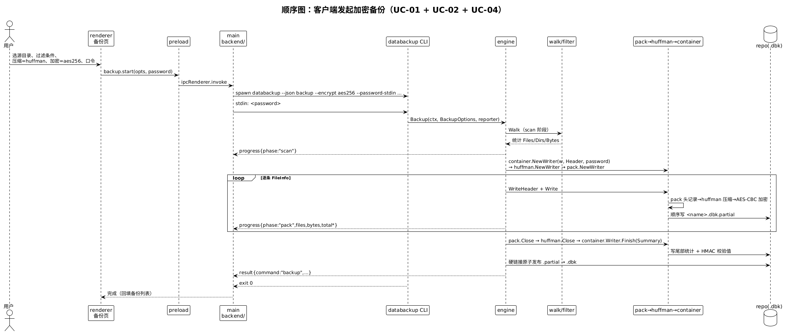
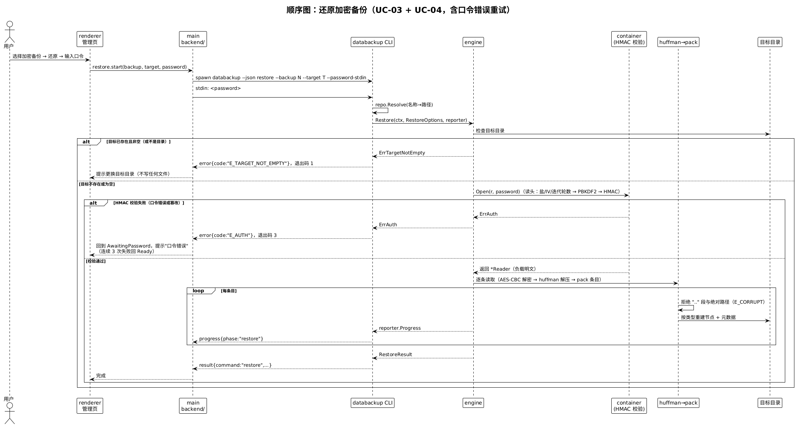
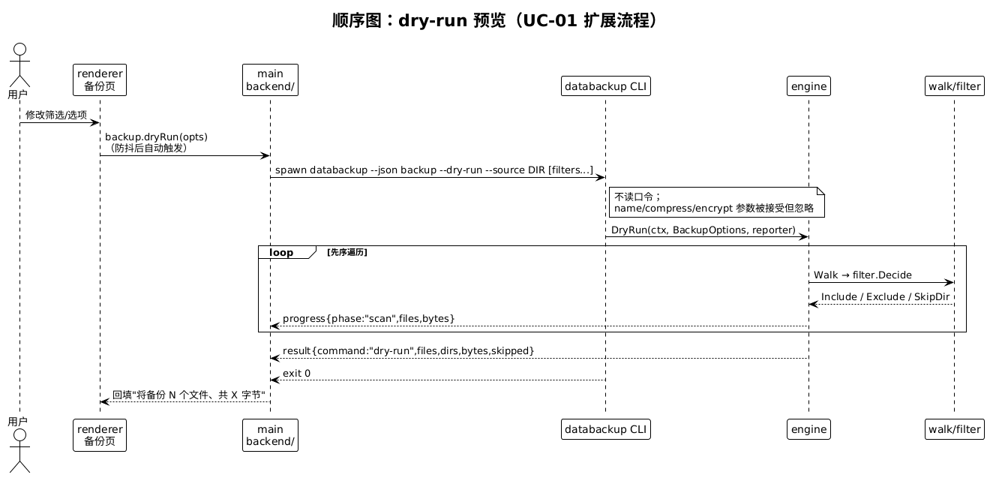
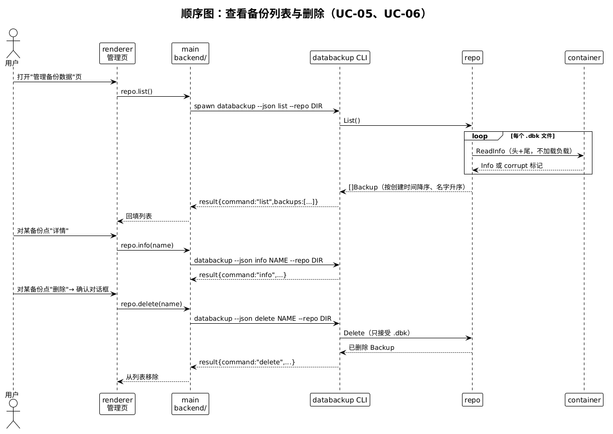
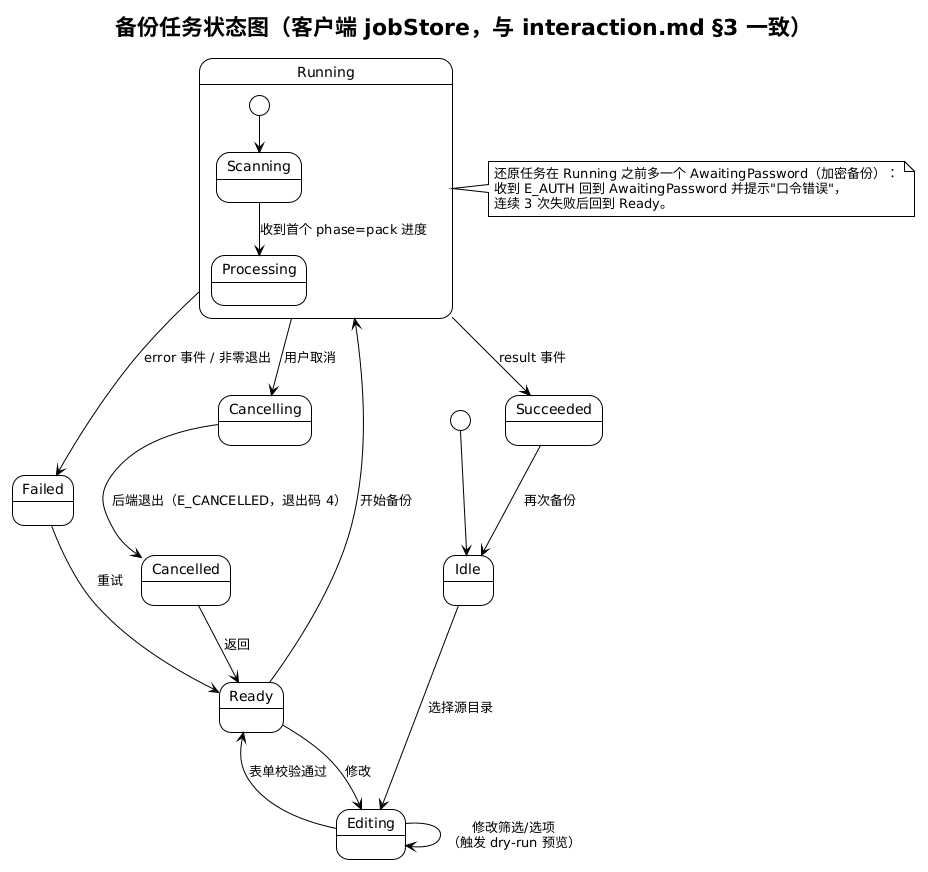

覆盖 UC-01 ~ UC-07：备份、还原、备份管理、设置、取消任务、口令输入、进度查看。

engine、walk、filter、pack、huffman、container、repo 的公开类型与依赖关系；与 M1-3 冻结的签名一致。

客户端（renderer / preload / main）与后端 CLI 的进程边界，以及 JSON Lines 协议所在位置。

CLI → engine → pack / huffman / container / repo 的调用方向，无数据库。

renderer 经 contextBridge 暴露的白名单 API 调用 main，main 再 spawn 后端。

scan → pack → compress → encrypt → 原子发布；进度事件只经 main 转发。

先整文件校验再落盘；错误口令返回 E_AUTH（退出码 3），客户端重试。

不写仓库，只遍历并套用过滤条件，把文件数/字节数返回界面。

list 只读容器头尾，损坏文件以 corrupt=true 标记；删除需长按确认。

9 个状态的转移与 interaction.md §3 一一对应；每个转移都有单元测试。